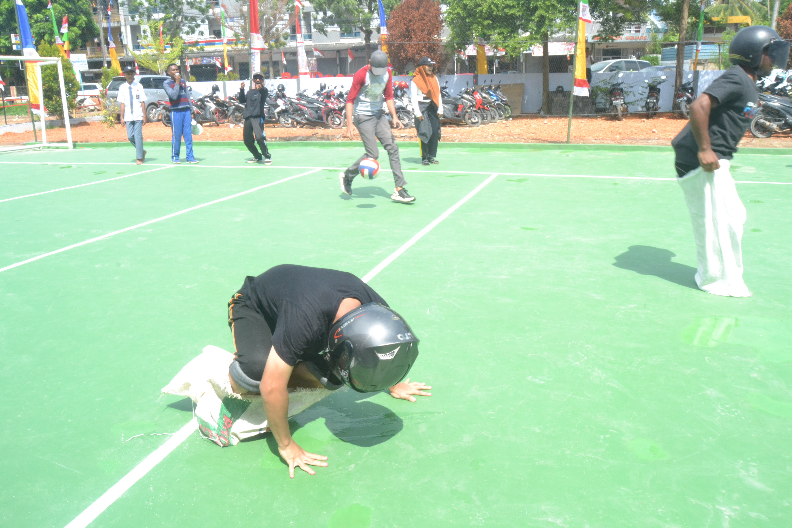
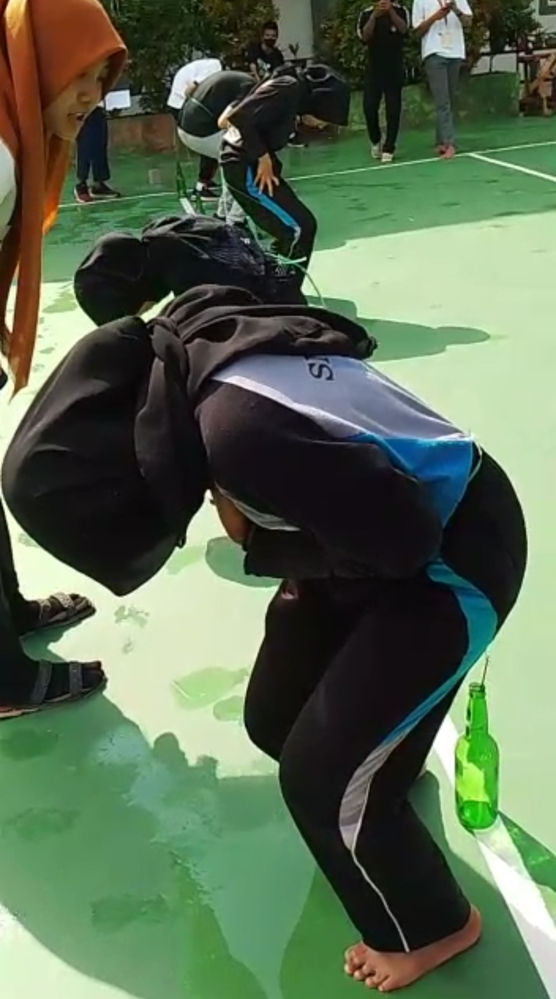
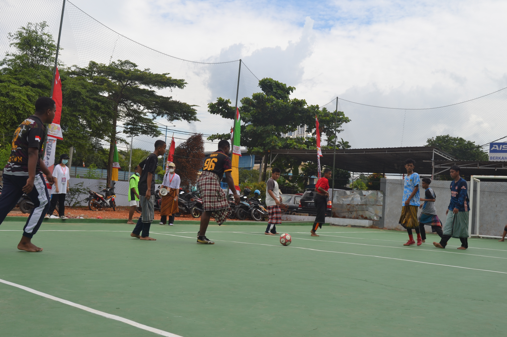
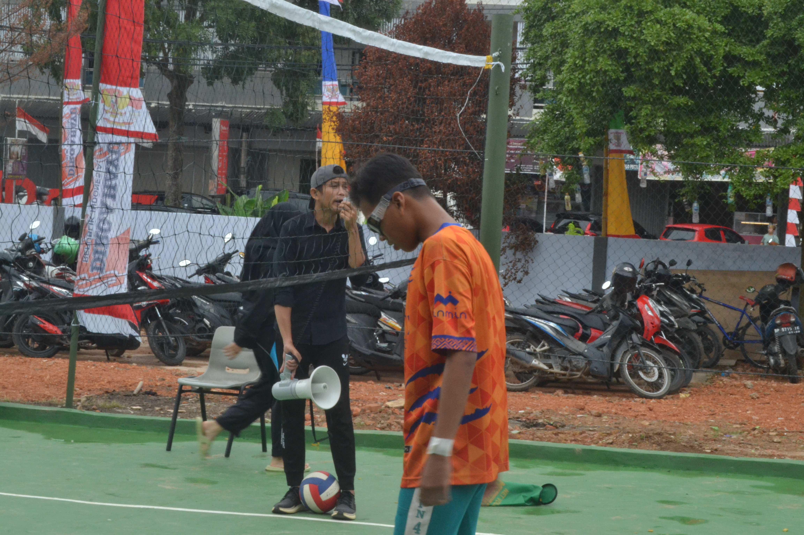
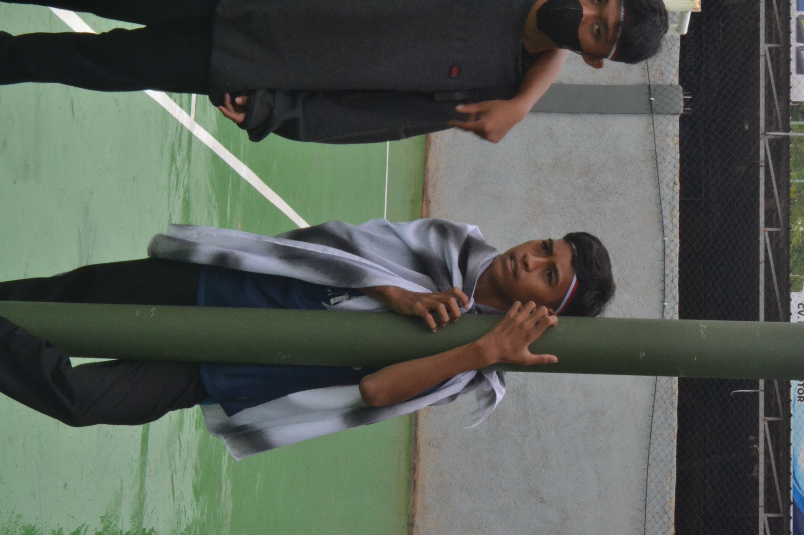
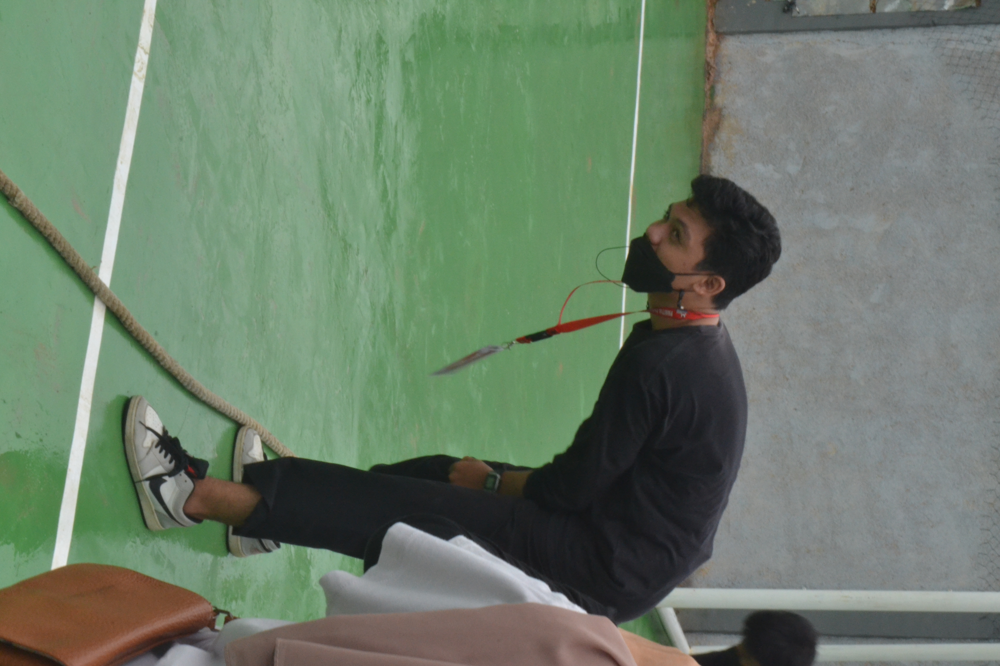
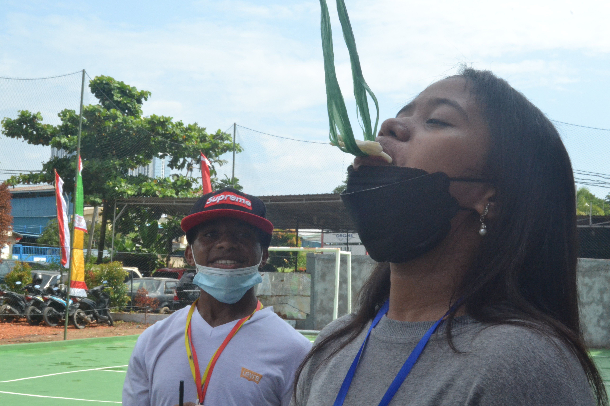
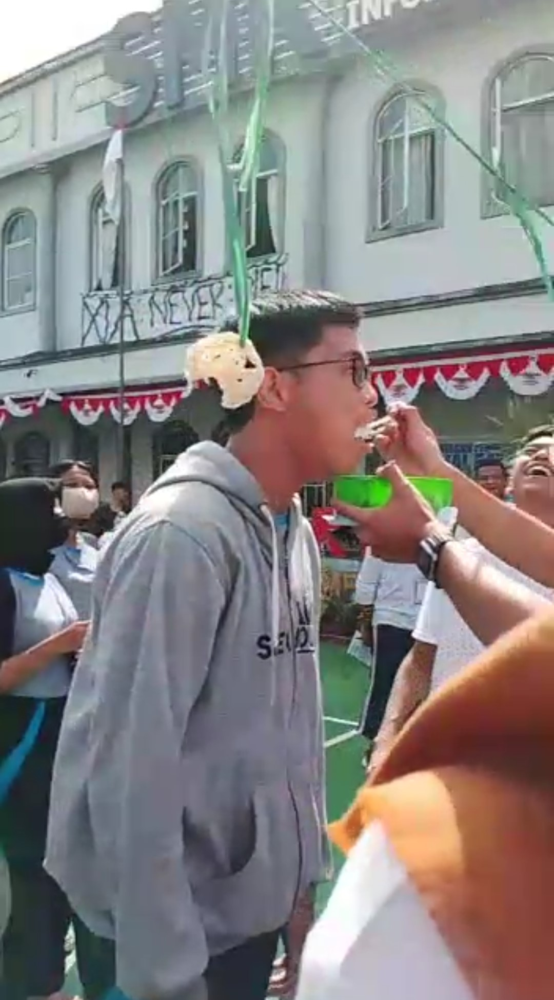

Tema HUT RI 2022 yang ke-77 kiranya akan menjiwai segala kegiatan dalam mempersiapkan acara peringatan hari proklamasi kemerdekaan itu nanti. Tema HUT Kemerdekaan RI 2022 pada 17 Agustus ini diusung karena melihat peristiwa yang telah dialami oleh bangsa kita selama akhir-akhir ini. Masih begitu banyak hal yang harus diurus dan diperbaiki agar menuju sebuah bangsa yang jaya dan makmur.
Perlaksaan Upacara 17 Agustust di SMK REAL INFORMATIKA
by Dhini A.M
17 AGUSTUS 2022 merupakan hari penting bagi negara Indonesia. Tepat pada tanggal tersebut Indonesia merdeka pada tahun 1945. Tahun ini Indonesia genap berusia 77 tahun. Sama halnya dengan sekolah lain, SMK REAL INFORMATIKA juga memperingati hari kemerdekaan negara republik Indonesia dengan melaksanakan upacara bendera di sekolah. Upacara ini dilaksanakan sebagai wujud rasa syukur & berterimah kasih atas perjuangan yang telah dilakukan oleh pahlawan untuk memerdekakan negara Indonesia.

Balap Karung
by Dhini A.M
Perlombaan balap karung dilakukan dengan cara estafet. Masing-Masing kelas menyumbangakn perwakilan 2 orang cewek & cowok yang dimainkan secara bergantian dimulai dari cowok kemudian dilanjutkan dengan cewek untuk menuju garis finis.

Memasukkan Paku dalam Botol
by Dhini A.M
Perlombaan ini diwakilakn oleh 1 orang dari masing-masing kelas, pemain yang bermain bebas mau perempuan ataupun laki-laki. Permainan ini bertujuan siapa yang paling cepat untuk memasukkan paku dalam botol tersebut akan dinyatakan menjadi pemenang.

Perlombaan Futsal
by Dhini A.M
Perlombaan futsal diselenggarakan pada hari Senin. Masing-Masing kelas terdiri dari 5 pemain, yang ditentukan dari gol yang mereka cetak pada waktu 15 x 2.
Tarik Tambang
by Dhini A.M
Perlombaan tarik tambang dilakukan oleh 5 orang pada masing-masing perwakilan kelas. Lima orang tersebut merupakn laki-laki, pada saat pluit dibunyikan mereka akan menarik tali sampai mencapai garis yan ditentukan kemudian akan dinyatakan menang oleh wasit.

Perlombaan Bola Voli
by Dhini A.M
Permainan bola voli dilakukan dalam 3 sheet. Masing-Masing kelas diwakilkan oleh 5 orang yang terdiri dari 3 orang laki-laki & 2 orang perempuan. Skor yang dicapai dalam masing-masing sheet adalah 25 point.


GAGAL PANJAT PINANG GESS~~~
Makan Kerupuk
Lomba makan kerupuk diselenggarakan pada hari Kamis. Masing-Masing kelas diwakilkan oleh 2 orang cowok & cewek. Pertama dimulai dari bagian cowok yang mewakili kelas masing-masing. Kemudian dilanjutkan dengan bagian cewek, masing-masing pemenang diadu kembali pada bagian terakhir untuk memperebutkan juara 1 & 2.
by Dhini A.M


Balap Kelereng
Balap kelereng diwakilakn oleh 3 orang perkelas yang terdiri dari 2 perempuan & 1 laki-laki. Bagian pertama dilakukan oleh laki-laki, kemudian untuk bagian ke 2 & 3 dilakukan oleh perempuan. Semua pemenang di masing-masing rounde akan diadu kembali dirounde tarakhir untuk memperebutkan juara 1 & 2.
.JPG)
.JPG)
.JPG)
.JPG)